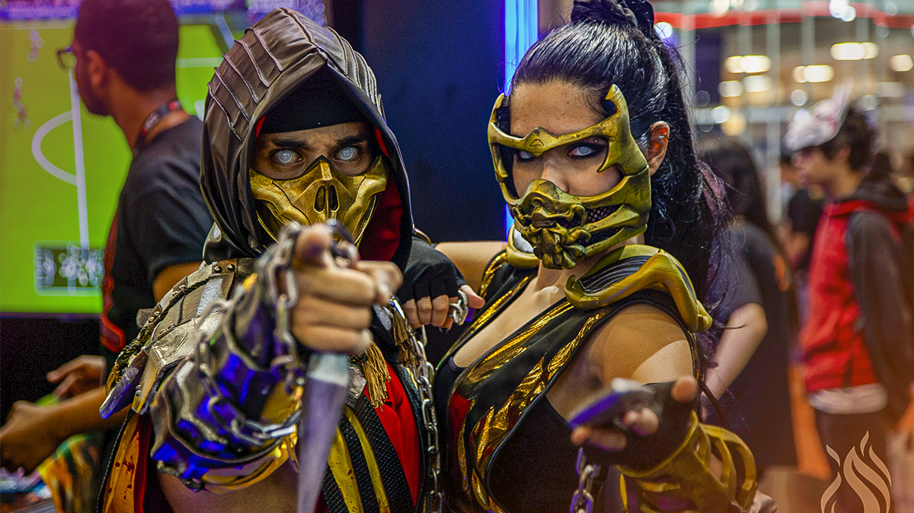
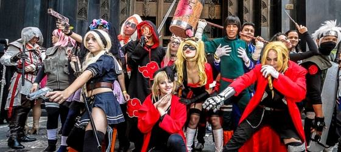
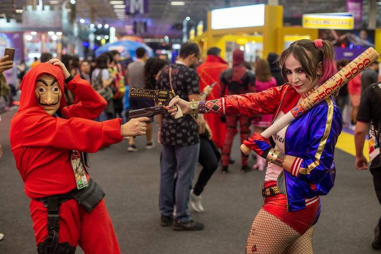

postado em 30/11/2022
Cosplay trata-se de um hobby em que as pessoas se fantasiam de um personagem de filme, animação (japonesa ou não), vídeo-game, quadrinhos, séries de TV ou até mesmo livros, representando traços de sua personalidade como: postura, falas e poses típicas, representando um determinado personagem. Esta atividade se originou nos Estados Unidos, em 1970, quando uma determinada convenção promoveu a entrada gratuita de pessoas fantasiadas de super-heróis.
Leia maispostado em 30/11/2022
O Anime Friends é realizado desde 2003 na capital paulista, estabeleceu-se como um dos mais tradicionais do país dedicados à cultura japonesa, quando ainda era focado em atender a demanda de público gerada pela invasão dos quadrinhos e desenhos japoneses no Brasil em meados dos anos 90. Com o passar dos anos, o Anime Friends passou a abraçar outros nichos do universo geek, como: O Yamato Cosplay é o grupo de concursos do Anime Friends que abrangem o Concurso Cosplay Regular, o Yamato Cosplay Cup Brazil, o Yamato Cosplay Cup International e o World Cosplay Summit. Todos eles tem por objetivo trazer à realidade figuras do mundo da fantasia e ficção, que causam tanto fascínio entre o público. Nem só de Cosplay vive o homem, por isso o Anime Friends separou uma série de auditórios temáticos com palestras para todos os gostos. Algumas das principais palestras que aconteceram no evento foram, ESPECIAL DUBLAGEM — SPIDERMAN HOMECOMING, ESPECIAL DUBLAGEM ONE PUNCH MAN e TAKUMI TSUTSUI — JIRAIYA. Essas palestras contam com a visita dos principais dubladores e protagonistas onde o publico pode prestigiar com um bate papo.
Leia maispostado em 30/11/2022
Comic Con Experience (também conhecida apenas como CCXP) é um evento brasileiro de cultura pop nos moldes da San Diego Comic-Con cobrindo as principais áreas dessa indústria como: vídeo-games, histórias em quadrinhos, filmes e séries para TV. Realizado pela primeira vez em dezembro de 2014 pelas equipes do site Omelete, da Piziitoys e pela agência Chiaroscuro Studios, é considerado o maior evento nerd já organizado no país e a maior Comic Con do mundo em público em 2019. Esse ano o evento em São Paulo acontecerá nos dias 1 a 4 de dezembro no São Paulo expo (é um pavilhão de exposições localizado no distrito do Jabaquara, zona sul da cidade de São Paulo).
Leia maisO sucesso de One Piece Red no Brasil
Leia maisHxH alcança marco importante
Leia maisAcesse o curso da Udemy para mais informações
Leia maisSaiba mais sobre cosplay
Leia maisO que é um cosplay?
Leia maisFeira de eventos Anime Friends
Leia maisFeira de eventos Comic Con
Leia maisGod of War Ragnarök vende 5,1 milhões de cópias na primeira semana
Leia maisConheça mais sobre Street Fighter 6
Leia maisOrigem dos video games
Leia maisProtetor de tela
DownloadToques para celular
DownloadJogue on-line
Jam.ggRoms Games
DownloadTodos os direitos reservados.